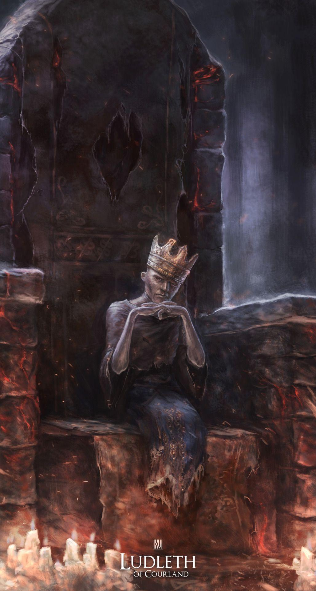

← Volver
← Volver
Ludleth de Courland es un Señor de la Ceniza y un NPC en Dark Souls III. Es uno de los NPC más útiles del juego, tal vez apenas un escalón por debajo de la Guardiana de Fuego.
¿Dónde se puede encontrar a Ludleth de Courland en Dark Souls III? Se lo puede encontrar en el Santuario del Enlance de Fuego, sentado en el segundo trono comenzando desde la izquierda.
| Ítem | Cantidad | Probabilidad | Suerte |
|---|---|---|---|
| Anillo Calavera (único objeto que puede arrojar) | 1 | 10% | No |
Diálogo del primer encuentro
"Oh, eres un No Encendido, y un buscador de Señores. Soy Ludleth de Courland. No mires con desconcierto mientras digo... Hace mucho tiempo que encendí el fuego, convirtiéndome en Señor de la Ceniza. Si necesitas confirmación, fija tu mirada en mi cuerpo carbonizado. Este triste cadáver. No hay necesidad de ser tímido, míralo con más atención."
Diálogo sobre los encuentros posteriores
"No te preocupes, no te preocupes. Mis pies están aquí firmemente plantados. Porque soy el Señor, y este es mi trono.."
Al seleccionar "hablar"
"Sabes cuál es nuestro propósito? Cinco tronos requerirán cinco Señores, como leña para la unión del Fuego. La Llama que se desvanece rápidamente debe unirse para preservar este mundo. Una recreación de la primera unión del fuego. Así es, me convertí en un Señor de la Ceniza. Puede que sea pequeño, pero moriré como un coloso."
Al seleccionar "salir"
"No trates a la Guardiana de Fuego con descortesía. Es muy parecida a ti. Prisioneras, ambas, mantenidas para encender el fuego. Vamos, vamos, no te alejes demasiado."
Al seleccionar "hablar" al llegar al Asentamiento de los No Muertos (antes de luchar con el Gran Árbol Corrompido.)
"Escucha, esto podría despertar tu interés. Antes de ser Señor de la Ceniza, estudiaba la transposición. El proceso de extraer y fusionar la esencia de un alma. Un arte prohibido que una vez dejó una mancha vil en el honor de Courland. Es un arte que otorga poderes que antes se creían inalcanzables. La mayoría de los hornos de transposición se perdieron con Courland, pero este lugar es un cruce de todo tipo de objetos malditos. Si encuentras un horno de transposición, tráemelo, rápido.."
Una vez entregado el Horno de Transposición
"Oh, tal vez sea... un horno de transposición en tu posesión. Ha visto mejores tiempos, pero creo que bastará. Ahora tráeme un alma retorcida. La transposición es el arte de extraer y fusionar la esencia de un alma. Al transponer un alma retorcida, su verdadero poder se transfiere a ti. Tu propósito es buscar amos y aniquilarlos. ¿Qué hay que temer de una pequeña transposición ahora?"
Después de matar al primer Señor de Ceniza
"Ah, ilustrísimo Buscador de Señores. ¿O debería decir, Destructor de Señores? ¡Excelente leña para los tronos! ¿No es cierto? Cada alma es verdaderamente digna del Señorío. Y todos fueron asesinados por tu mano. Para atarlos a sus tronos, incluso en la muerte. Oh, no tengo reparos. Pues como nosotros a nuestros tronos, tú cumples con tu deber. De hecho, creo que ayudaste a estos pobres Señores a seguir su camino correcto.."
En posesión de las espadas de Lothric y Lorian
"Ah, has descubierto dos espadas muy peculiares. Una maldición las unió, de modo que sirvieron como una sola. Un horno transpositor debería devolverles su forma original. Pero antes de actuar, piénsalo bien. Como sabes, solo están recién desgarradas."
Al encontrar los Ojos de Guardiana de Fuego
"Ahhh. ¿La encontramos? ¿Y veo esos ojos negros que brillan en su interior? Es como si fuera ayer. Hicimos todo lo posible por protegerla de ellos. Mucho ha sucedido desde entonces. Quizás debería informarte... de lo que la tenue luz de estos ojos podría revelarle a la Guardiana de Fuego sin ojos. Escenas de traición, cosas que nunca estuvieron destinadas a su conocimiento, visiones de... el fin de esta era... "
Al seleccionar "hablar" luego de haber encontrado los Ojos de Guardiana de Fuego
"Los ojos muestran un mundo desprovisto de fuego, un plano árido de oscuridad infinita. Un lugar nacido de la traición. Así que me propuse, Señor, conectar el fuego, pintar una nueva visión. ¿Cuál es tu intención?"
Al salir luego de entregar los Ojos de Guardiana de Fuego
"Tomé el manto de Señor de la Ceniza por voluntad propia. Digo estas palabras con orgullo. Elige tu destino solo. Confía en él con tus propias manos. Con mayor razón, si tu destino conlleva una traición tan vil. "
Al acercarte a él, luego de que el jugador lo haya matado previamente
"Ahh, canta, hasta los huesos, duele... Por favor, ayúdenme. Acaben conmigo... No, dioses, no, no puedo soportarlo... Arde, arde, ayúdenme..."
(Después de matar a la Armadura Matadragones) "¿No lo ven? Soy un señor... Una pequeña llama, probablemente, pero cargo con el mundo... Perdóname. Oh, por favor... No tengo la culpa. No la tengo."
Seleccionar "hablar" luego de haberlo matado previamente
"Oh, ofrezco mis disculpas, debo de haber dormitado durante un rato. ¿Te has topado con algún alma retorcida?."
Después de matar a Aldrich con Anri
"Ahh, bien encontrado. Por fin has vuelto. ¿Recuerdas el nombre, Anri de Astora? El valiente muchacho/chica dejó esto como agradecimiento. (Espada) Aunque no dio ninguna explicación... Entonces. ¿Te has topado con algún alma retorcida?"
"Ahora, presta atención a esta pequeña advertencia de este pequeño señor. No busques al/la muchacho/a. Él/Ella conoce su fe. ¿Qué será de él/ella al terminar su deber? No querría que lo/la siguieras."
Después de colocar todas las Cenizas de los Señores
"Ah, bien encontrado. Todo va según lo previsto, ¿verdad? Cinco señores por cinco tronos... Gloria a Dios, mi Campeón Destructor de Señores. Todo es obra tuya. El escenario está listo para que yo también desempeñe mi papel como Señor. Ve. Habla con la Guardiana del Fuego."
(Deseando un mundo sin Fuego): "Ah, bien encontrado. Todo va según lo previsto, ¿verdad? Cinco señores por cinco tronos... Pensar que otros jamás podrían ser elevados... Y yo, de los Últimos Señores, un señor bastante pequeño, indigno de tal honor. Habla con la Guardiana del Fuego."

 ↑
↑